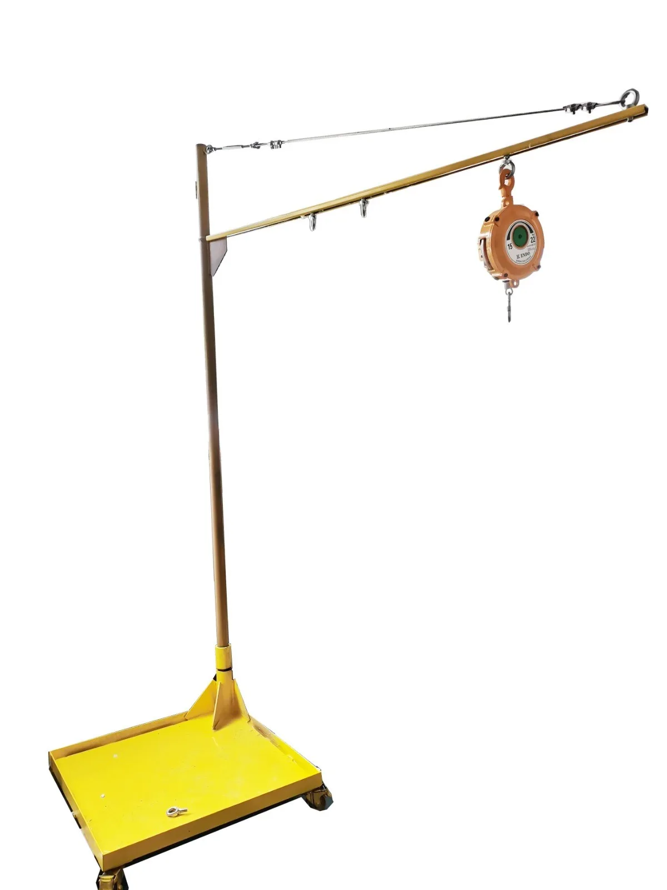
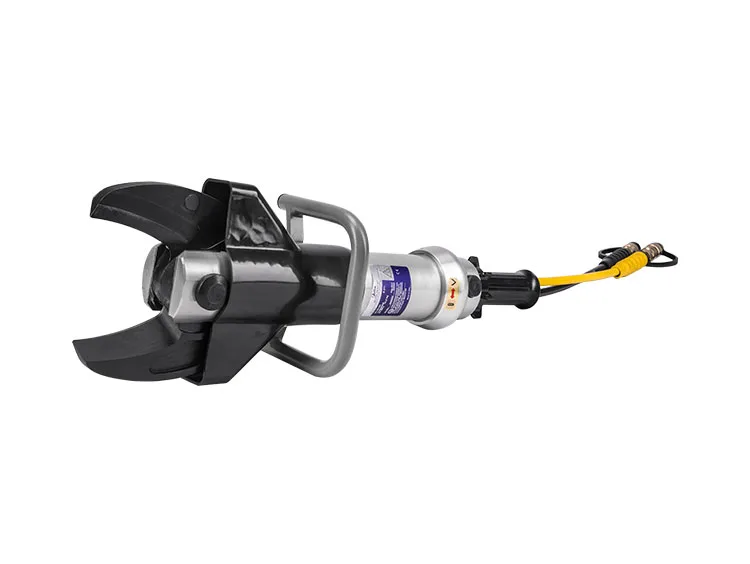

Pour un découpage efficace de l'acier, des pots catalytiques et des traverses. Des outils indispensables aux centres VHU, casses auto et centres de secours.
De la potence ergonomique à la cisaille haute pression, équipez vos opérateurs pour gagner en productivité et en sécurité.


Les cisailles de démantèlement hydrauliques jouent un rôle crucial dans de nombreuses applications, en particulier pour les centres VHU, les casses auto et les centres de secours. Ces outils spécialisés sont essentiels pour la gestion efficace et sécurisée des véhicules en fin de vie comme pour les opérations de secours après accident.
Les cisailles permettent une déconstruction sûre, efficace et respectueuse de l'environnement des véhicules hors d'usage. Conçues pour couper précisément à travers les métaux et autres matériaux, elles facilitent le démontage et améliorent la séparation des différents matériaux constitutifs des véhicules, favorisant le recyclage et la réutilisation, en conformité avec les réglementations environnementales.
En cas d'accident impliquant des véhicules lourdement endommagés, ces cisailles permettent aux équipes de secours de couper rapidement et en toute sécurité les carrosseries pour libérer les passagers piégés. Leur capacité à découper les métaux les plus résistants peut faire la différence lors d'opérations de désincarcération critiques.
En alliant force, précision et fiabilité, ces outils représentent un investissement précieux pour tout professionnel du démantèlement et du secours.
Elles permettent de découper rapidement et proprement l'acier, les pots catalytiques et les traverses lors du démantèlement de véhicules hors d'usage, et servent aussi à la désincarcération lors d'opérations de secours.
La S211 développe une force de cisaillement de 293 kN sous une pression nominale de 630 bars, avec une ouverture de coupe de 128 mm, pour un poids de seulement 14 kg.
Le compensateur de poids de la potence YYDGG soulage l'opérateur du poids de la cisaille, améliorant nettement le confort, la sécurité et la productivité lors des opérations répétées.
La cisaille S211 est proposée à 1 750 € HT, ou à +1 080 € HT avec un flexible de 8 m et son unité hydraulique pour un ensemble prêt à l'emploi.
Pour les centres VHU, les casses auto, les recycleurs automobiles et les centres de secours qui recherchent un outil de découpe puissant, précis et fiable.
Configurez votre solution ou décrivez-nous votre besoin : notre équipe vous répond avec un devis détaillé, adapté à votre site.
Demander un devis